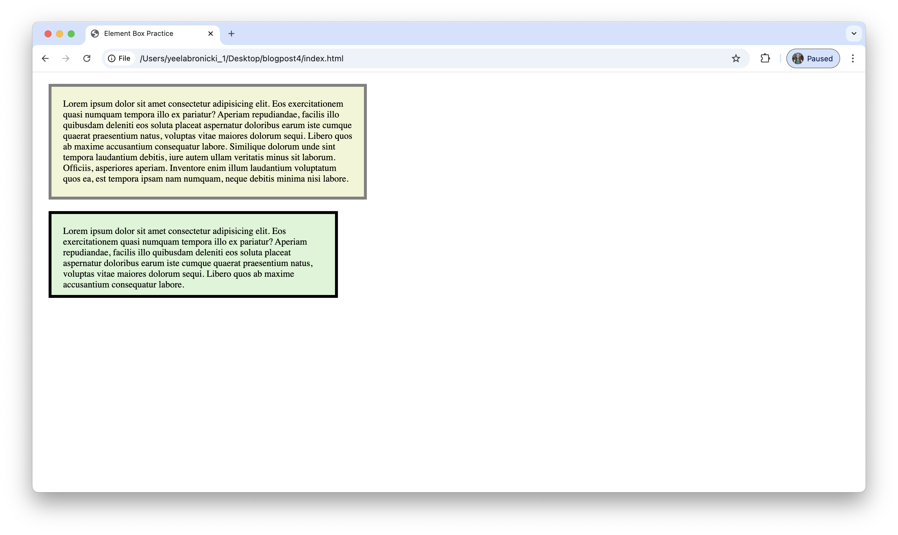

Learning Web Design
Reading chapters 14 through 17 of the book Learning Web Design provided me with more information on how I can create my desired layouts for webpages (such as those I create in DES 117). The information that stuck out to me most was about the element box and padding vs margins.
The figure on page 355 was a nice visual refresher on the CSS properties I have been using the past few weeks as it's easy for me to type the code with the idea of what it's doing but not quite visualizing where the extra space goes.
I appreciated the deeper dive into how to adjust the size of element boxes with consideration for the margin and/or padding (see my practice image above). Before reading how to create this CSS rule, I would have thought to change the content area's size to accommodate the margin/padding. Having this new information will help me be more efficient.